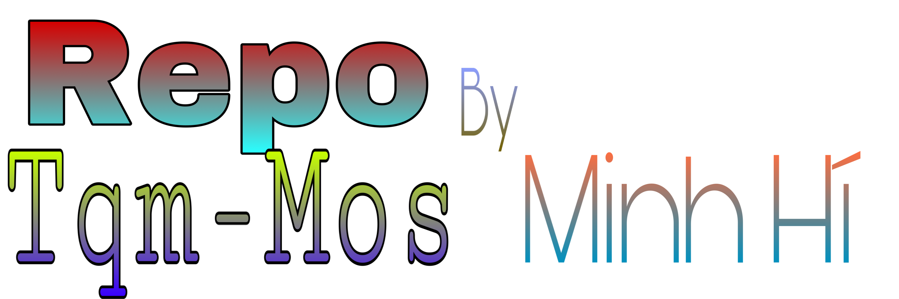
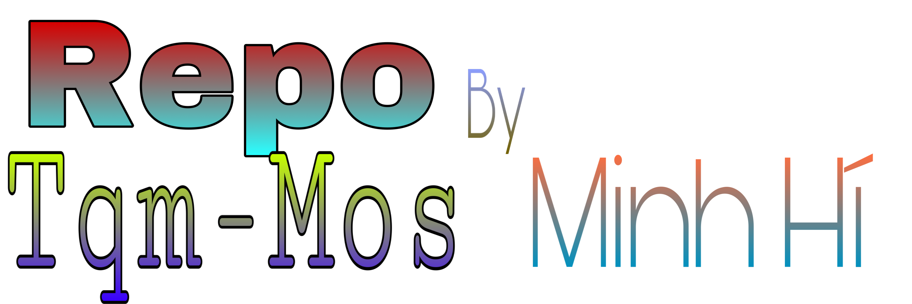

| | |SOURCE BY TQM-Mos| | |  >>>>>>>Add Source Cydia<<<<<<< Facebook Twitter * Kho lưu trữ những Tweaks hay hữu ích *

>>>>>>>Add Source Cydia<<<<<<< Facebook Twitter * Kho lưu trữ những Tweaks hay hữu ích *
Facebook Twitter * Kho lưu trữ những Tweaks hay hữu ích *
Twitter
* Kho lưu trữ những Tweaks hay hữu ích *